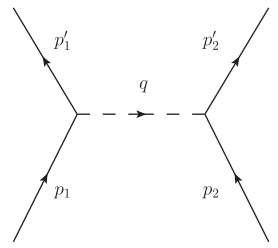

Background
Consider a mass-full scalar field \phi coupling with a mass-less scalar field \chi, the toy model’s total Lagrangian can be written as: \mathcal{L}_B = \partial_\mu \phi^* \, \partial^\mu \phi - m^2\phi^* \phi + {1 \over 2} \partial_\mu \chi \, \partial^\mu \chi - \lambda \phi^* \phi \chi So we have Feynmann rules for those particles (in momentum space):
- Vertex: - i \lambda
- \phi propagator: i\over{p^2 - m^2 + i \epsilon }
- \chi propagator: i\over{p^2 + i \epsilon }
Now we can consider a simple \phi - \phi scattering process:

The scattering amplitude of this diagram is simple: \mathcal{M}^{(0)} = - i {\lambda^2 \over q^2} This is an u-channel diagram, for this process, there is also a s-channel diagram, these two together make up the first order of this scattering process, however, for our topic today, it’s unrelated.
Then consider the following high-order diagram, in which the \chi particle breaks in to a pair of virtual \phi and anti-\phi particle.

The amplitude of this new diagram is: \mathcal{M}^{(1)} = {\lambda^4 \over q^4} \int {d^4 k \over (2\pi)^4} {1 \over {k^2 - m^2 + i \epsilon}} {1 \over {(k-q)^2 - m^2 + i \epsilon}} One immediately sees this integral is divergent. The integral measure contains |k|^3, causes the result to diverge in the form of \ln{|k|}, and this does not make any sense, since this diagram is meant to be a small correction of the first diagram we’ve already covered. Something needs to be done to get a reasonable answer.
Further investigation of there two amplitudes, one will notice the effect of the second diagram is just multiplying some factor on to the propagator of \chi, which is: G_\chi^{(1)}=G_\chi^{(0)} \, \lambda^2 {i \over q^2} \, I(q) where I(q) = \int {d^4 k \over (2\pi)^4} {1 \over {k^2 - m^2 +i \epsilon}} {1 \over {(k-q)^2 - m^2 +i \epsilon}}
Calculating the integral
Feynmann factorize
Start with rewriting the integral in a more manageable form, using the fact that: \begin{align*} {1 \over {A B}} &= \int_0^1 dx {1 \over {[x A + (1-x) B]^2}} \\ &= \int_0^1 dx \int_0^1 dy \: \delta(x+y-1) \, {1 \over {[x A + y B]^2}} \end{align*} The factorized denominator is: \begin{align*} D &= x(k^2 - m^2 +i \epsilon) + y[(k-q)^2 - m^2 +i \epsilon] \\ &= k^2 - 2 y q k + y q^2 - m^2 + i \epsilon \\ &= (k - yq)^2 + xyq^2 - m^2 + i \epsilon \\ &= l^2 - \Delta + i \epsilon \end{align*} In the third equal we’ve used x + y = 1. Finally by shifting k, which is just applying l = k - yq and \Delta = - xyq^2 + m^2, the integral becomes: \int {d^4 k \over (2\pi)^4} {1 \over {k^2 - m^2 +i \epsilon}} {1 \over {(k-q)^2 - m^2 +i \epsilon}} \\ = \int_0^1 dx \int_0^1 dy \: \delta(x+y-1) \, {1 \over (2\pi)^4} \int {d^4 l} {1 \over {(l^2 - \Delta + i\epsilon)^2}}
Wick rotation
The integral is integrated over the 4-dimensional Minkowski space, which is tedious. However, one can apply Wick rotation to turn it in to a 4-dimensional Euclid space integral.
Focus on the integral over l^0: \int_{-\infty}^{+\infty}dl^0 {1 \over {[(l^0)^2-|\vec{l}|^2 - \Delta + i \epsilon]^2}} The integral is real. However, this integral can be considered as a integral in the complex plane, the contour is around the upper-half of the complex plane, since obviously at \infty things in the integral turn into zero. So the value of this integral only depends on the residue of singularities involved, which in the upper-half only have l^0 = -\sqrt{|\vec{l}|^2+\Delta} + i \epsilon, so the contour can be rotated to the left-half of the plane, resulting in: \int_{-i\infty}^{+i\infty}dl^0 {1 \over {[(l^0)^2-|\vec{l}|^2 - \Delta + i \epsilon]^2}} Then apply l^0 = i l^4: \int_{-\infty}^{+\infty}dl^0 {1 \over {[(l^0)^2-|\vec{l}|^2 - \Delta + i \epsilon]^2}} = i \int_{-\infty}^{+\infty}dl^4 {1 \over {[- (l^4)^2 - |\vec{l}|^2 - \Delta + i \epsilon]^2}} Integral over the 4-Minkowski now transforms into a 4-dimensional Euclid integral. The i\epsilon is no longer necessary, since there are no singularities on the complex-axis: \int {d^4 l} {1 \over {(l^2 - \Delta + i\epsilon)^2}} = i \int {d^4 \bm{l_E}} {1 \over {(\bm{l_E}^2 + \Delta )^2}}
Hard cut-off
One can calculate the integral by simply using the 4-dimensional spherical coordinate system, then apply a hard cut-off \Lambda to l_E:： \int {d^4 \bm{l_E}} {1 \over {(\bm{l_E}^2 + \Delta)^2}} =\lim_{\Lambda \to + \infty} \int d\Omega_4 \int_{0}^{\Lambda}dl_E {{l_E}^3 \over {({l_E}^2 + \Delta)^2}} By the way, this cut-off is Lorenz invariant, sinces it’s identical to a cut-off applied under Minkowski space. However, if one do the l^0 integral first then apply the cut-off, it’s not Lorenz invariant. Then this integral is trivial: \begin{aligned} \int_{0}^{\Lambda}dl_E {{l_E}^3 \over {({l_E}^2 + \Delta)^2}} &= {1 \over 2} \int_{0}^{\Lambda}d{l_E}^2 {{l_E}^2 \over {({l_E}^2 + \Delta)^2}} \\ &= {1 \over 2} \int_{0}^{\Lambda}d{l_E}^2 \left[{1 \over {{l_E}^2 + \Delta}} - {\Delta \over {({l_E}^2 + \Delta)^2}}\right] \\ &= {1 \over 2} \left( \ln{{\Lambda^2 + \Delta} \over \Delta} - {\Lambda^2 \over \Lambda^2 + \Delta} \right) \\ &= {1 \over 2} \left( \ln{{\Lambda^2} \over \Delta(x,y,q^2)} - 1 \right) \end{aligned} Substitute all these result to the original inegral I(q) (Integral over d\Omega_4 is 2 \pi^2): I(q) = {i \over 16 \pi^2 } (\ln{\Lambda^2 \over \mu^2} - 1 - \int_0^1dx \ln{\Delta \over \mu^2}) \mu is an arbitrary number has unit of mass, which keeps the inside of \ln pure number, but actually it’s not necessary and won’t effect our final answer.
Renormalized \chi propagator
Take account of other loop diagrams (loops are aligned along the \chi propagator and do not have loops inside them), the total propagator of \chi is: G_\chi(q) = \sum_{n=0}^{\infty}G_\chi^{(n)} ={i \over q^2 - i \lambda^2 I(q)} One will notice the divergent part of I(q), which is \ln\Lambda^2, does not depend on q. That means if we introduce the exact mass term into \chi’s Lagrangian, the divergents cancels out: \mathcal{L} = \mathcal{L}_B - {1 \over 2}M^2\chi^2 Where M = {\lambda^2 \over 16 \pi^2} \ln{\Lambda^2 \over \mu^2} + M_0^2. The introduce of M_0 is for keeping the original propagator under q = 0 limit.
So the corrected propagator is: G_\chi(q) = {i \over q^2 - {\lambda^2 \over 16 \pi^2}(\int_0^1dx\ln{\Delta \over \mu^2}+1)+M_0^2} Apply constrain at G_\chi(0) will allow us to get M_0^2 = {\lambda^2 \over 16 \pi^2}(\ln{m^2 \over \mu^2} + 1), then add back i\epsilon: G_\chi(q) = {i \over q^2 - {\lambda^2 \over 16 \pi^2}\int_0^1dx\ln(1-{x(1-x)q^2 \over m^2}) + i\epsilon} This is \chi’s “absolute” propagator. There is a mass-like term depending on q^2, which indicates different behaviour under different energy.
Now we’ve successfully solved the divergent introduced by the loop diagram, though -\lambda\phi\phi^*\chi vertex and \phi propagator can also generate divergent, however they can be treated using the same manner. If we try to do this under QED, gamma matrixes and tensor algebra will be invoded, making it more tedious.